System Workflow Diagrams
Rendered from docs/WORKFLOW.md. Click a diagram to open it full size.
LLM involved
Deterministic
Human
Result bucket / end state
- End-to-end pipeline
- Discovery loop
- Replay execution
- Error taxonomy
- Handoff control-token state machine
- Handoff sequence
- Irreversible action gate
- Multi-tenant resolution
- Artifact lifecycle
- Component map
- Evals and telemetry
01End-to-end pipeline
02Discovery loop
03Replay execution
04Error taxonomy
05Handoff control-token state machine
06Handoff sequence
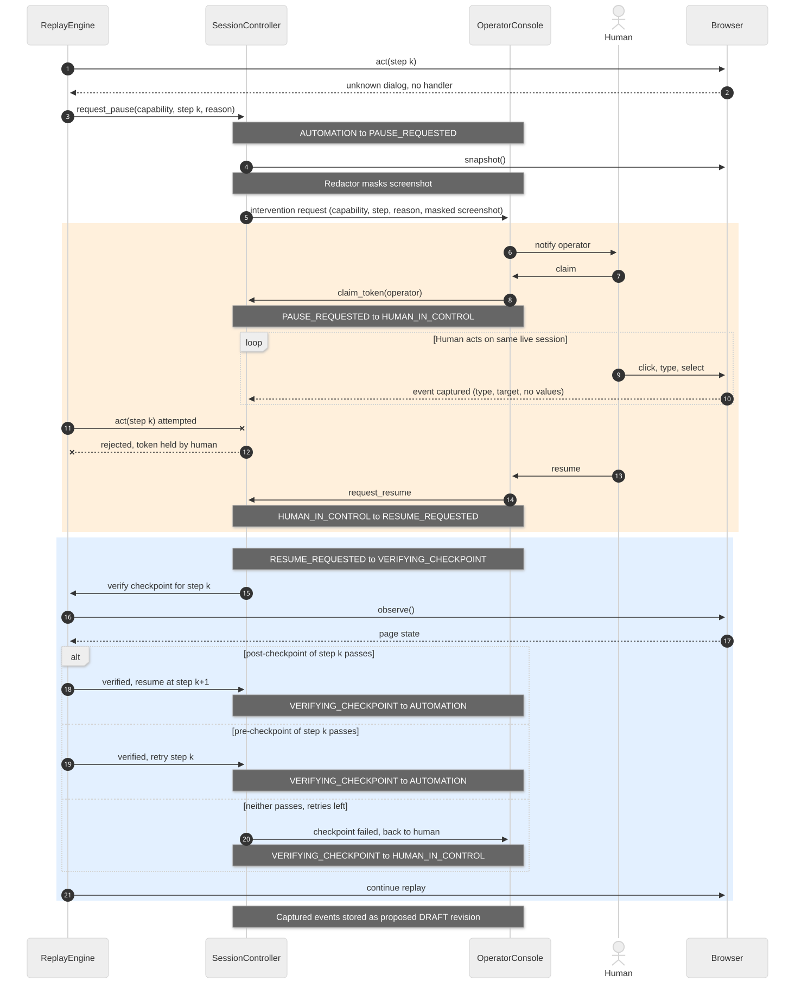
07Irreversible action gate
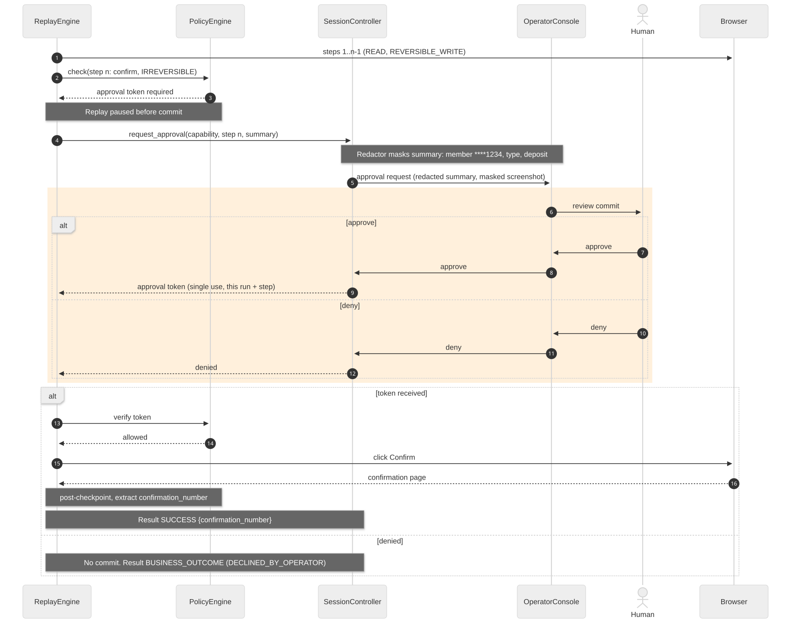
08Multi-tenant resolution
09Artifact lifecycle
10Component map
11Evals and telemetry
